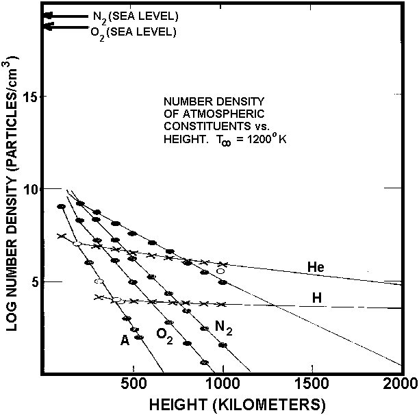
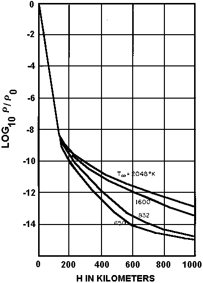

<title>Dynamique
  orbitale</title><!--#set var="prev" value="Observations visuelles faites par des astronautes américains" --><!--#set var="start" value="Rapport Condon" --><!--#set var="start.url" value="../../.." --><!--#set var="contents" value="Sommaire" --><!--#set var="contents.url" value="../../../contents.html" -->
<meta content="Franklin E. Roach" name="author"/><!--#include virtual="/header.html" -->

<figure class="left side">
  <caption>
    Figure 2 : Constituants atmosphériques vs altitude
  </caption>
  <tbody>
  <tr>
    <td></td>
  </tr>
  </tbody>
  </table>
  <figure class="right side">
    <caption>
      Figure 2 : Densité atmosphérique vs altitude
    </caption>
    <tbody>
    <tr>
      <td></td>
    </tr>
    </tbody>
    </table><p>Les satellites en orbite sont sujets à atmospheric drag, qui finit par provoquer leur réentrée dans
    l'atmosphère de la terre, produisant souvent un display brillant alors qu'ils le font. Les réentrées sont parfois
    signalées en tant qu'ovnis. Un cas récent en particuliers tient lieu d'exemple d'une réentrée rapportée comme un
    ovni et par la suite identifiée tentatively comme les réentrées de l'Agena de Gemini 11 (<a
        href="/time/1/9/6/8/CondonReport/s4/c2/case11.html">cas 11</a>) et Zond IV (voir <a
        href="/time/1/9/6/8/CondonReport/s6/c02/index_fr.html">Section 6, Chapitre 2</a>).</p>
    <p>
      L'espace de 100 à 1000 km n'est pas un vide parfait, pas plus qu'il n'est isotherme. Vers 100 km the mean
      molecular weight de l'atmosphère undergoes a marked change, where O<sub>2</sub> becomes dissociated by sunlight
      into atomic oxygen (voir Fig. 2). Jusqu'à 100 km environ le profil de température varie entre 200 °K environ et
      300 °K. Au-dessus de 100 km la température undergoes a steady increase to 1000 °K. ou plus. La Fig. 3 montre
      comment la densité relative de l'atmosphère varie avec l'altitude jusqu'à hauteur de 1000 km. Au-dessus de 200 km
      la densité est sensitive to the asymptotic high-level temperature, too, which varies with the solar cycle and
      geomagnetic activity.

    </p>
    <p>
      Si la Terre était une sphère parfaite et si il n'y avait pas de atmospheric drag, les satellites en orbite autour
      de notre planète se comporteraient selon les Lois de Kepler des orbites planétaires autour du Soleil. Le tableau 4
      est dérivé de la 3ème loi de Kepler. La relation entre la période en s (p) et la distance moyenne en cm (r) est
      exprimée par :</p>
    <table border="0" cols="3">
      <tbody>
      <tr>
        <td align="right" valign="center"><strong>p<sup>2</sup> = </strong></td>
        <td><strong> 4 pi<sup>2</sup> r<sup>3</sup>
          <hr noshade="noshade"/>
          G M<sub>E</sub> </strong></td>
        <td valign="center"><strong> = 0.9906 x 10<sup>-19</sup> r<sup>3</sup> </strong></td>
      </tr>
      </tbody>
    </table>
    <p>
      où G, la constante gravitationnelle, est de
      <nobr>6,668 x 10<sup>-8</sup> cgs</nobr>

      et M<sub>E</sub>, la masse de la Terre, est de
      <nobr>5,977 x 10<sup>27</sup> g.</nobr>

      La vitesse moyenne en orbite (la dernière colonne) est obtenue par la relation :
    </p>
    <table border="0" cols="4">
      <tbody>
      <tr>
        <td align="right" valign="center"><strong>S = </strong></td>
        <td><strong> 2 · Pi · r
          <hr noshade="noshade"/>
          p </strong></td>
        <td valign="center"><strong> = </strong></td>
        <td><strong> 1.996 x 10<sup>10</sup>
          <hr noshade="noshade"/>
          sqrt(r) </strong></td>
      </tr>
      </tbody>
    </table>
    <p>
      En appliquant la 3ème loi de Kepler nous avons impliqué la validité des 2 premières lois de Kepler concernant les
      orbites de satellites ; i.e., que les satellites se déplaçent about la Terre en orbites elliptiques avec le centre
      de la Terre à un des foyers de l'ellipse ; et que le radius vector swept out by the satellite with respect to the
      center of the earth sweeps out equal areas in equal times.

    </p>
    <p>
      The angular velocity of a satellite, (proportional to the reciprocal of the period), decreases as the radius of
      the orbit increases. Thus the process of docking, or flying in formation with a satellite already in a preceding
      orbit becomes a complicated and difficult maneuver involving descent to a lower, and therefore smaller, orbit with
      the resultant increase in angular velocity causing the following orbiting body to approach the preceding.</p>
    <table cols="6">
      <caption>Tableau 4</caption>
      <tbody>
      <tr>
        <th>Rayon de l'orbite</th>
        <th colspan="4">Période de l'orbite autour de la Terre</th>
        <th>Vitesse</th>
      </tr>
      <tr>
        <th>r (km)</th>
        <th>P (s)</th>
        <th>P (mn)</th>
        <th>P (h)</th>
        <th>P (j)</th>
        <th>S (km/s)</th>
      </tr>
      <tr>
        <td>6378 + 200</td>
        <td>5310</td>
        <td>88,5</td>
        <td></td>
        <td></td>
        <td>7,78</td>
      </tr>
      <tr>
        <td>6378 + 500</td>
        <td>5677</td>
        <td>94,6</td>
        <td></td>
        <td></td>
        <td>7,61</td>
      </tr>
      <tr>
        <td>6378 + 1000</td>
        <td>6307</td>
        <td>105,1</td>
        <td></td>
        <td></td>
        <td>7,35</td>
      </tr>
      <tr>
        <td>6378 + 35,862</td>
        <td>86,400</td>
        <td></td>
        <td>24</td>
        <td></td>
        <td>3,07 (géostationaire)</td>
      </tr>
      <tr>
        <td>6378 + 378,025</td>
        <td>2372 x 10<sup>6</sup></td>
        <td></td>
        <td></td>
        <td>27,4</td>
        <td>1,02 (Lune)</td>
      </tr>
      </tbody>
    </table>
    <hr noshade="noshade" width="25%"/>
    <p>* mean radius of earth = 6378 km.
    </p>
    <p>
      La drag atmosphérique ralenti la vitesse du <a href="/science/crypto/ufo/enquete/meprise/Satellites.html">satellite</a>,
      en particulier près du périgée, et ceci amène le <a href="/science/crypto/ufo/enquete/meprise/Satellites.html">satellite</a>
      à swing out à une autre apogée plus petite. L'orbite se contracte et devient plus circulaire. Finalement le <a
        href="/science/crypto/ufo/enquete/meprise/Satellites.html">satellite</a> descend à une altitude où the drag
      amène le <a href="/science/crypto/ufo/enquete/meprise/Satellites.html">satellite</a> à <a
        href="/science/crypto/ufo/enquete/meprise/rentree/index.html">réentrer</a> dans l'atmosphère terrestre.</p>
    <p> Le tableau 5 montre des décélérations calculées pour un objet massif comme un <a
        href="/science/crypto/ufo/enquete/meprise/Satellites.html">satellite</a>, et une petite particule météoritique
      de 0,1 cm de diamètre et de densité de 0,4 gm/cm<sup>-3</sup> (masse = 2,09 x 10<sup>-4</sup> g). A 160 km (le
      périgée de nombre des orbites des appareils contrôlés) la décélération sur le vaisseau spatial n'est pas trivaile
      (0,017 cm/sec<sup>-2</sup>) et l'orbite se dégradera lentement mais sûrement en une <a
          href="/science/crypto/ufo/enquete/meprise/rentree/index.html">réentrée</a>. Intéressante par rapport à
      l'observation de petites particules par les astronautes est l'accélération différentielle entre le vaisseau et les
      particules. En une période de 10 s de petites particules "dériveront" loin de l'appareil jusqu'à une distance de
      plusieurs mètres. Des vitesses relatives typiques de petites particules par rapport au vaisseau ont été estimées
      par les astronautes à 1 ou 2 m/s.</p>
    <p>
      Lors de la <a href="/science/crypto/ufo/enquete/meprise/rentree/index.html">réentrée</a>, le vaisseau et les
      fragments émaillant sa surface deviennent lumineux, produisant les displays parfois signalés comme ovnis. Une <a
        href="/science/crypto/ufo/enquete/meprise/rentree/index.html">réentrée</a> de <a
        href="/science/crypto/ufo/enquete/meprise/Satellites.html">satellite</a> intervient normalement le long d'une
      trajectoire grazing, mais les trajectoires de <a
        href="/science/crypto/ufo/enquete/meprise/rentree/meteore/index.html">météorites</a> sont plus radiales, et par
      conséquent la durée de luminosité ne dépasse généralement pas 2 ou 3 s.</p>
    <p>
      Le tableau 6 montre les masses d'objets pour des magnitudes stellaires apparentes données et diverses périodes de
      luminosité, calculatées en supposant que la totalité de l'énergie cinétique orbitale de l'objet est convertie en
      lumière suite à sa décéleration lors de la <a href="/science/crypto/ufo/enquete/meprise/rentree/index.html">réentrée</a>.
    </p>
    <table cols="5">
      <caption>Tableau 5 - Calculs de décéleration</caption>
      <tbody>
      <tr>
        <td class="titleCorner"></td>
        <th colspan="2">
          Satellite
        </th>
        <th colspan="2">
          Petite particule
        </th>
      </tr>

      <tr>
        <th>Masse (g)</th>
        <td colspan="2">
          3,63x10<sup>6</sup>
        </td>
        <td colspan="2">
          2,09x10<sup>-4</sup>
        </td>
      </tr>

      <tr>
        <th>Diamètre (cm)</th>
        <td colspan="2">400</td>
        <td colspan="2">0.1</td>
      </tr>

      <tr>
        <th>Ratio, aire/masse</th>
        <td colspan="2">0,00865</td>
        <td colspan="2">37,5</td>
      </tr>

      <tr>
        <th>Altitude (km)</th>
        <td>160</td>
        <td>200</td>
        <td>160</td>
        <td>200</td>
      </tr>

      <tr>
        <th>Densité de l'air</th>
        <td>8,271x10<sup>-13</sup></td>
        <td>1,098x10<sup>-13</sup></td>
        <td>8,271x10<sup>-13</sup></td>
        <td>1,098x10<sup>-13</sup></td>
      </tr>

      <tr>
        <th>Décélération (cm-sec<sup>-2</sup>)</th>
        <td>1,741x10<sup>-2</sup></td>
        <td>2,311x10<sup>-3</sup></td>
        <td>18,86</td>
        <td>2,50</td>
      </tr>

      <tr>
        <th colspan="3">
          Séparation de l'appareil après :
        </th>
      </tr>

      <tr>
        <td>1 s</td>
        <td></td>
        <td></td>
        <td colspan="2">1,25 cm</td>
      </tr>

      <tr>
        <td>10 s</td>
        <td></td>
        <td></td>
        <td colspan="2">125 cm</td>
      </tr>

      <tr>
        <td>100 s</td>
        <td></td>
        <td></td>
        <td colspan="2">12500 cm</td>
      </tr>
      </tbody>
    </table>
    <!--#include virtual="/footer.html" -->
